Group Edit Commands
Clicking on the Group Edit button brings up the Group Edit Toolbar.
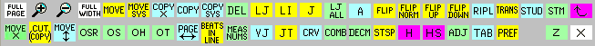
For most of these features you may type a command or click on the appropriate box. The program will ask for a portion of the page to be indicated by typed commands or outlined by mouse strokes. The mouse may be used to draw a box around the desired area. A single click in a staff area will select the entire staff. Drawing a straight line up through a group of staves will select all all of them. You should check the message box at the top of the screen to be sure the proper area has been selected.
|
CTN,CTX - Center Text (lyrics) |
LI - Line up according to rhythm |
This allows you to move a group of items to another location. After selecting a source area, you will be asked for confirmation, and then asked to specify a destination area.
If you make a single click on another staff or type a staff number alone, a destination box will be drawn on the new staff with the same dimensions and position as the source box.
If you draw a thin vertical line on any staff, the destination box, with the same dimensions as the source box, will be drawn at that point. If you type a staff number, x, followed by one other number, n, the destination box will appear on staff x, moved n steps to the right.
If you draw a box with new dimensions, or type a staff number and two more numbers, n1, n2, indicating the left and right sides of the box, the source material will be scaled to fit the new box.
After confirming the position of the destination box, the following dialog box will appear:
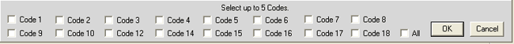
This allows you to move only selected types of Items. If none of the check boxes are selected, clicking on OK will select all Items.
Use the following format if you wish to type in the commands, without the use of the mouse, or you wish to include a MOVE or COPY or DELETE command in an external macro file.
M (or C)
A (bottom_source_staff), B (left_position), C (right_position), D (top_staff), E (code#), F (code#), . . .
X (bottom_destination_staff), Y (left_position), Z (right_position)
If C is left at 0, 200 is assumed. If D is left at 0, staff number in A is assumed.
If no code numbers are given, all codes are assumed.
If no numbers are given for Y and Z, the same range as given in B and C assumed.
If only Y is given, the items in the range B-C will be moved Y steps.
Some examples:
M moves all items on staff 1 to staff 2.
1
2
M moves all items between 20 and 160 on staves 1 and 2 to
1 20 160 2 the space between 90 and 200 on staves 5 and 6.
5 90 200
M moves all code 1, code 2 and code 14 items between
3 35 120 6 1 2 14 35 and 120 on staves 3 to 6, 10 steps to the left.
3 -10
D deletes all code 9 and code 16 items between
4 90 150 5 9 16 90 and 150 on staves 4 and 5.
MX
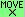
Type MX to move, expand, or contract a selected group of items.
The following dialog box will appear.
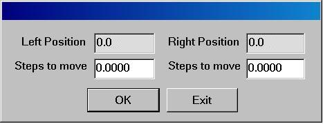
The upper boxes will show the extent of the selected area.
Then you should type in the changes to be made.
If, for example, you drew a box on an area from 15 to 60,
these numbers would appear in the upper boxes. If you
then typed -5 and 10 into the lower boxes and then hit
<enter>, the selected area would expand to 10 and 70.
If you hit <enter> again, the area will expand to 5 80. etc.
If very small numbers are entered, MX is quite useful for
making fine adjustments by eye.
This command will NOT move items to a different staff.
COPY (type C)
This command works exactly as does MOVE except that the source material remains in place.
This command works as above, but no destination box is requested and the selected Items within the box
will be deleted.
Use the following format if you wish to include a DEL command in an external macro file:
D
A (bottom_source_staff), B (left_position), C (right_position), D (top_staff), E (code#), F (code#), . .
If B s left at 0, 200 is assumed. If D is left at 0, staff number in A is assumed.
If no code numbers are given, all codes are assumed.
Example: D deletes all code 3 and code 9 items on staff 2.
2 0 0 0 3 9
COPY X (type CPX)
This command will make several copies of the selected Items to the same position on all other staves indicated.
With this command a complete system of several staves can be moved to a new level.
MSX -- This is for special cases where all the music is on staves higher than staff one. Typing MSX will shift the staff numbers so that the lowest staff will be staff one, at P4 level 0 (recommended.)
COPY SYS (type CS)
With this command a complete system of several staves can be copied to a new level.
MOVE up/down 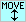
You will be asked for the number of steps to move, plus or minus. Staff lines, clefs, meter numbers, key signatures and barlines will not be moved with this command.
A (group alter) (type A)
After you indicate an area on the screen, you will be asked for a code number (e.g. 1 for notes, 2 for rests, etc.) Then you will be asked, "Type P#, chng, P#, chng, P#, chng ...." Here you should type pairs of numbers indicating the parameter and the change desired. For example, to change a group of notes to eighth notes you would type "7 .5 9 1." (P7 = .5 = eighth note time value, P9 = 1 = add a single flag to each note stem.) In some cases it may be more efficient to use the conditional editing method for this kind of editing.
The selected group of Items will be saved in a file named !!CUT0.TMP. These Items may be retrieved by typing PST (for PASTE) or clicking on the PASTE button in the main toolbar menu. If CT is typed, it may be followed by any number from 0 to 9. Thus Items "cut" by CT5 can be retrieved by typing PST5. These created files can be stored indefinitely and used in other projects. (See also ending an edit with XX.)
STems Up/Down 
Type H or HS or click on one of the buttons. SCORE will display the current height of the file, and prompt for a new height. H finds the total height of all the material on the page. HS finds the height from the bottom line of the lowest staff to the top line of the highest staff.
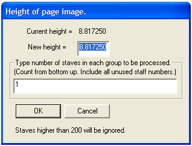
Type a number to indicate the new height and type the number of staves in a system. (include any unused staves. )
SCORE asks how many staves are in each system from the bottom up. If every system has the same number of staves, you may specify a single number for this prompt. The
H command will put more space between each system (if you are adding height to the file) or remove space from between the systems (if you are reducing the height). If you want to add space between every staff, type 1 regardless of how many staves are in a system.
Note that the H adjustment is not intelligent, like VJ. It blindly closes up or adds space between the staves equally, regardless of the music. As a general rule, we recommend using the
VJ command to bring the staves as close together as possible and
then use the H command to add space where desired.
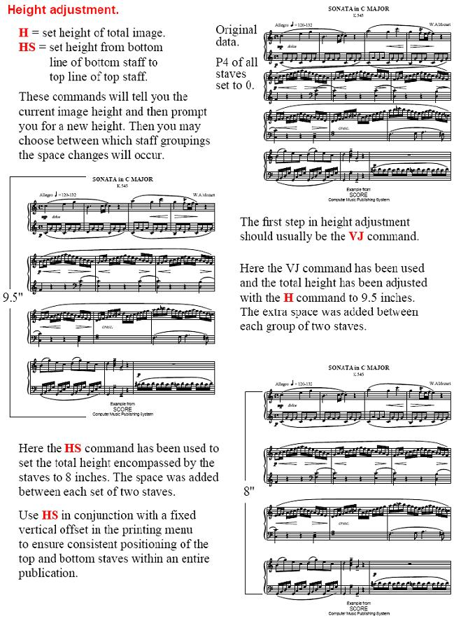
You may avoid the dialog box by typing on a single line H or HS followed by the new height and the staff group numbers.
H 10 2 2 3 2 would set the height to 10 inches, with staff groups of 2, 2, 3 and 2.
H 7 alone would set the height to 7 inches, with the staff group number defaulting to 1.
VJ vertical justification (type VJ)
This command is used to avoid vertical collisions between Items found on different staves.
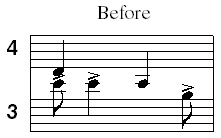
Type VJ or click on the VJ button. The following dialog box will appear.
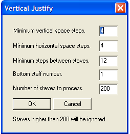
You may press <ENTER> to accept the defaults, or type different values in the various boxes.
In this case the bottom staff number was given as 3, the number of staves to process, 2.
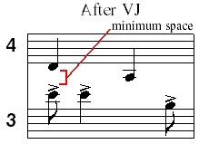
After invoking VJ, SCORE searches through the file for items that extend above and below the staves. Assuming you accepted the default settings for Minimum vertical space = 4, and Minimum horizontal space = 4, VJ would make sure that any items within four horizontal spaces of each other would have a minimum vertical distance of four scale steps between them. To create this distance, VJ alters P4 of the upper staves (Code 8) indicated. If you want less vertical space between staves, make the first number smaller. In general, we have found the default settings of 4,4 to work quite well. (Also be sure to read the section on the H [total page height] command.)
Note that the VJ command is ideal for creating an orchestral score that employs "french scoring." If you input your orchestral score on a standard template (with the same number of staves on each page) and later decide to remove the blank staves (when an instrument rests), the VJ command will quickly allow you to close up the extra space on the page. VJ does not require staff numbers to be continuous (i.e., you may have staff no. 4, then staff no. 6, etc.). VJ will correctly justify the height of the file in a quick and efficient manner.
You may avoid the VJ dialog box by typing on a single line VJ followed by the proper numbers; n1, n2, n3, n4, n5, as they would appear in the dialog box. N1=minimum vertical space, n2=minimum horizontal space, n3=minimum space between staves, n4=bottom staff to consider, n5=number of staves. If only n1 is given, the other numbers will take the default values of 4, 12, 1, 200.
VJ 4 would perform the vertical justification with the default values.
This command will flip the stem directions of the selected group of notes. Associated slurs and beams will also be altered. Some further editing may be required, especially in regard to attached accidentals, etc.
FLIP (type FLI) will reverse stem directions.
FLIP NORM (type FLN) stems will be set to their "normal" directions.
FLIP UP (type FLU) all stems set to up.
FLIP DOWN (type FLD) all stems set to down.
All Items on a page are numbered as they are entered. The Items are automatically reordered by various commands such as LJ. However it may be useful to establish different ordering to facilitate editing.
OS - order by staff number. Items are ordered from left to right on each staff beginning with staff 1.
OH - order by horizontal position. Items are ordered from left to right depending only on their horizontal position.
OT - order text. Text Items will be numbered from left to right starting with the highest staff. After the text items are ordered, all the other Items are ordered in the manner of the OS command.
OSR - order by staff number reversed. This works as OS but ordering from the highest staff down.
Another ordering command may be typed - ORN. This may be necessary when color or gray scale Items are present. See the chapter on Color/Gray Control for details.
(type BEAT n) this will tell you how many beats there are in line n.
Move Page to Right (verso to recto) or back to Left (recto to verso).
(type PGR) Use this to view or print two pages at once. This will move the current page 8 1/2 inches to the right. 200 will be added to all the staff numbers. (staff 1 will become staff 201, etc.) Then you may use GM (get more) to bring in another page in the normal position. With this method you can print two pages at a time on 11"x17" paper.
Clicking on this button a second time moves the page back to the left.
(type MN)
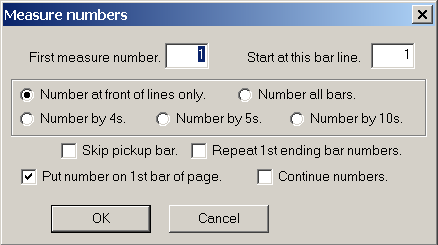
The affect of most of the check boxes should be self-evident.
For <Repeat 1st ending bars numbers>, if unchecked, the numbers remain in sequence.
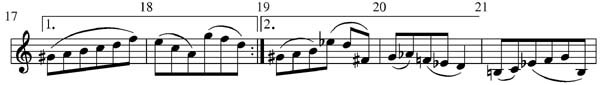
If this box is checked, the following numbering would occur. The 2nd ending will include the same measure numbers as the 1st ending.
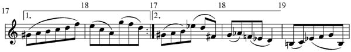
If the <Continue numbers> box is checked, the next time MN is used, the <First measure number> box will be updated to one higher than the last measure on the previous page.
It is likely that some editing of the height position of the numbers will be necessary.
An external macro file may be created to set measure numbers. The required syntax is MN followed by seven numbers, N1, N2, N3, N4, N5, N6, N7. N1 = 1st measure number. N2 sets the frequency of the numbers. N2 = 0 puts numbers only at the front of each line. N2 = 1 puts numbers on all bars. N2 = 4 puts numbers on every 4th bar, = 5 puts numbers on every 5th bar, = 10 puts numbers on every 10th bar. If N3 is set to 1, the first bar of music will be considered as a "pickup" and the numbering will begin on the second bar. N4 sets at which bar the first number will appear. If N5 = 0 the numbering will continuing through 1st and 2nd endings. If N5 = 1, the numbers under the 1st ending will be repeated under the 2nd ending. If N6 = 1, no number will appear on the first bar of the music. If N7 = 1, the last number on the page will be retained and the next page processed will begin with the next bar number. Note the following example:
MN 1 1 0 1 1 0 1
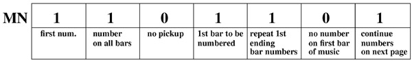
This syntax must be strictly followed.
See section on reading external macro command files for further use of MN.
Justifying Music to the Lyrics (type JT)
CTN, CTX - centering text (lyrics) on notes.
When not in Edit Mode these commands can affect a large group of text items. (See Code 16 re. details.)
Typing CTN or CTX alone can move all text items on the screen. This may not always be desireable.
CTN n will center all text items on staff n only.
CTN n p1 p2 n2 centers the items on staff n between positions p1 and p2 and on all staves up to n2.
If the first number is negative, the command will only affect text items below that P4 level. For example:
CTN -3 1 0 200 6 would center text items found at P4 = -3, or below, on staves 1 through 6. This command format is probably the most useful.
Sets all slurs in the designated area to the default curvature. (type CRV)
Combine group of files. (type COM)
The following dialog box will appear. If the extension on the top name is .MUS it need not be typed.
You should type RS (restart) before using this feature.
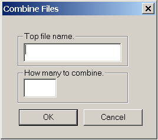
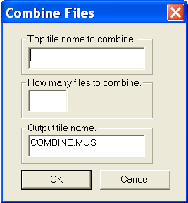
If, for example, the top name given is FLUTA and the number given is 6, then files FLUTA.MUS through FLUTF.MUS will be combined. The combined page will appear on the screen under the name that may be given in the third box.
To use the Combine feature in a Macro file use the following format:
Name of top file to combine.
Number of files to combine.
Output name of combined files.
Decombine file into separate parts. (type DEC)
This will separate out the various staves of the music currently on the screen .
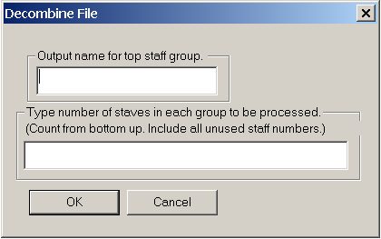
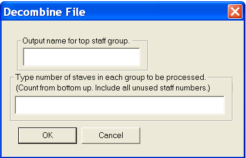
The numbers typed will indicate the groupings of the staves, beginning with staff 1 (the bottom file), for the output files. Assuming that all staves in the following example are in the same file, the top output name might be given as \PROJECT\TR01. If the numbers given are 2 1 1 2 1 1 2 1 1, this will produce nine output files, \PROJECT\TR01.MUS (the top group) through \PROJECT\TR09.MUS (the bottom group). You may then rename these files appropriately.
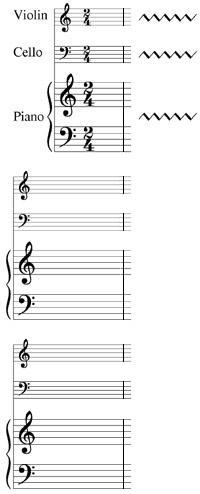
If all the upper staves are not accounted for in the number list, the last number will apply to all remaining staves. For example, if the page has twelve staves and you type 3 4 1, the bottom 3 staves will occupy one file, the next four staves another file, and the remaining four staves will be found in separate files. If just 1 is typed, there will be twelve separate output files named in alphabetic/numeric order.
To use the Decombine feature in a Macro file use the following format:
Output file name for top decombined group.
List of numbers of staves in each decombined group.
Set Space between staves (type STSP)
This allows you to set the space between staves. See also EQA and EQS below.
ORIGINAL
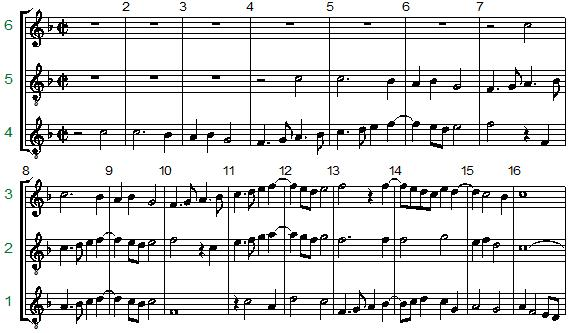
If you choose the top option in the dialog box, you should enter pairs of numbers, i.e. a staff number and the space to the next staff above. The space given is in inches or centimeters, depending on what has been set for measurements.
For any staff numbers omitted from the list, the space will remain unchanged.
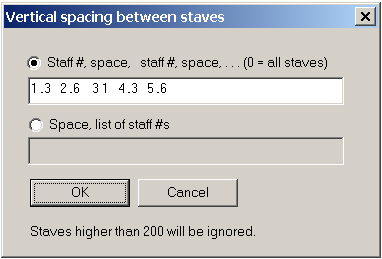
The above entries produce the following:
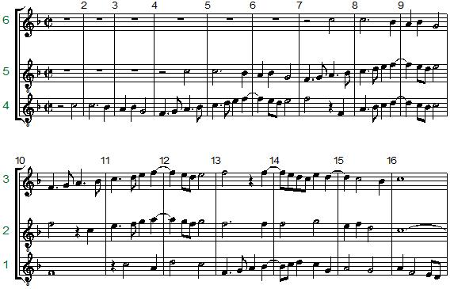
If you choose the bottom option, give the space value followed by the desired staff numbers.
For any staff numbers omitted from the list, the space will remain unchanged.
If no staff numbers are given, all the staves will be spaced equally.
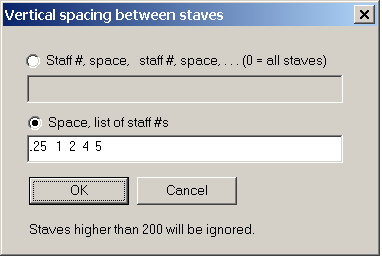
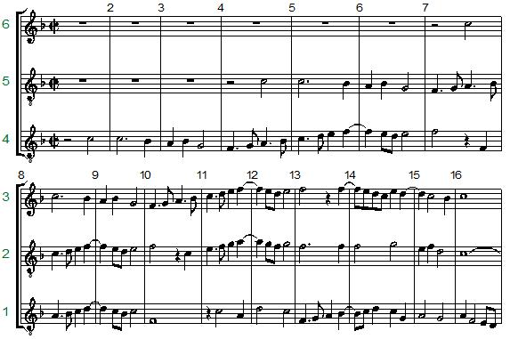
With this option, for a continuous group of staves you could enter, for example, <.3 1-14>. This would space all the staves, 1 through 14, by 3 10ths of an inch. The two range numbers must be separated with a dash <->.
These commands may also be typed directly or used in a saved macro command file.
For the top option: STSP s1 z1 s2 z2 ... etc., where s is a staff number and z is a space value.
For the lower option: STSPX z s1 s2 s3 ... etc., where z is a space value and s1 s2, etc., are the staff numbers.
EQA- equalize space between staves.
EQS - equalize space between systems.
EQA will equalize the spacing between all the staves on a page. The vertical positions of the top and bottom staves will not be changed. To apply this to only part of a page a lower and upper staff number may be typed. For example, typing <EQA n1 n2> will equalize the spacing within staff n1 and staff n2.
EQS will equalize the spacing between systems. For this purpose, a system is defined as a group of staves where a bar line extends from the bottom of the lower staff to the top of the upper staff. The relative spacing of the inner staves of the each system will not be changed. If you wish to apply this to only part of a page you can type <EQS n1 n2> where n1 is the bottom of the lower system and n2 is the bottom staff of the upper system. See also above STSP (set staff spacing.)
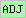
Convert to Tablature (type TAB)
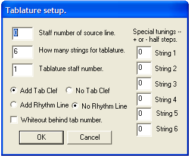
 The Preference file (type PREF)
The Preference file (type PREF)
Ripple (move) measures from one system to another (type RIP)
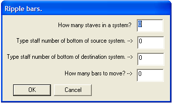
In the following example we will ripple two measures up from the bottom system to the top system.
In the dialog box, type 3 in the top box.
The bottom staff of the source system is 1, so that goes in the second box.
The bottom staff of the destination system is 4, so that goes in the next box.
The number of bars to move is 2.
BEFORE
AFTER Rippling two bars up.
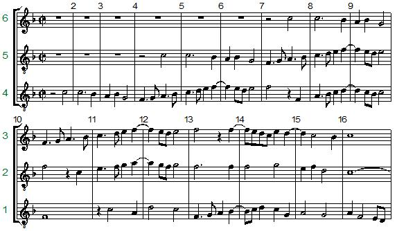
You may Ripple bars to systems either above or below the source system.
The Ripple command does an LJ on both of the systems involved.
If there are slurs or ties across barlines some editing may be required.
Slur or ties coming into the first bar of a system may have to be reentered.
You may undo the Ripple with the UNDO command.
You may avoid the RIPPLE dialog box by typing on a single line RIP followed by the proper numbers; n1, n2, n3, n4, as they would appear in the dialog box. N1=number of staves in the system, n2=source staff number, n3=destination staff number, n4=number of bars to ripple. If n4 is not given, one bar will be rippled.
This works the same as above, except that a range of staves may be indicated.
The format for this command is as above: RIPX n1, n2, n3, n4. However n2 and n3 represent a range of staves. For example, <RIPX 1 7 2 1> assumes single staff systems (n1), 1 bar (n4) will be rippled from staff 7 (n2) to staff 6, then 1 bar will be rippled from staff 6 to staff 5, etc., until 1 bar will be rippled from staff 3 to staff 2 (n3). If n2 is less than n3 the bars will be rippled upward from each staff to the staff above.
SEP - Separate two-voice extracted orchestral parts.
Orchestral scores often combine two parts, such as 1st and 2nd clarinets, on one staff. Whereas the players' parts usually include only the music for one instrument. After the part extraction (PARTS) feature is used, the individual player's part is usually extracted from the double part. The SEP command does this operation.
SEP will process grace notes (where P7 = 64 or 65) but SEP will ignore cue notes (where P4 is greater than +/-100.)
When you have on the screen a page of double-part music and you type SEP, the following dialogue box appears. If you want to process only part of the page, type in the appropriate staff numbers. Be sure to save the results to a new name, because you will want to return to the original page to extract the other part. Some touch-up editing is usually necessary -- this is especially true in regard to slurs and ties. The placement of these items in a double part is often different from what is required for a single part. While the program will often move the slurs, etc., to their proper positions, sometimes it may be best to leave all these items in their original positions. Then you can easily delete which items are not needed and edit the others to their proper positions and shapes. In this case you should check the "Keep all slurs" box.
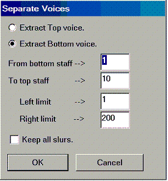
If you wish to bypass the dialogue box, you can type all the command elements on one line. To get the same results as you would from the above dialogue box, type:
SEP 2 1 0 200 10
(Separate voice 2, starting on staff 1, positions 1 to 200, up through staff 10)
If you add one more number ( "1"), the output will keep all slurs.
If you type only SEP 1 or SEP 2, the top or bottom voice will be extracted from all lines on the page.
Following shows the results of separating the voices from double-part lines extracted from a full orchestra score.
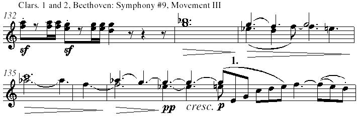
-------------------------------------------------------------
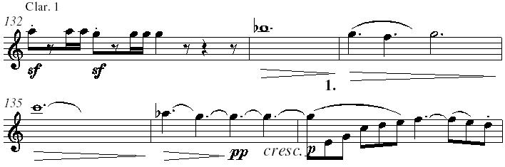
-------------------------------------------------------------
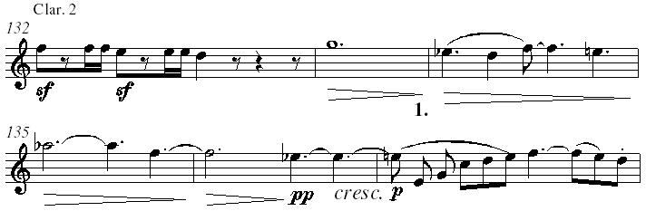
In the last measure of the 2nd Clarinet part above, the program did not know that there should be rests in place of the last nine notes. The edited version of the above two lines would appear as follows.
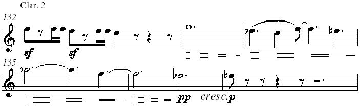
As can be seen, the space needs of the individual parts may be quite different from those of the double-voice orchestra lines. After each part has been extracted and edited, it should be run through the Page Layout process to respace the lines and find possible points for page turns.
The use of MACRO command files can save much time in cases like this. Assuming the entire extracted Clarinets 1 and 2 part from the slow movement of Beethoven's 9th symphony occupies 4 pages (CL01.PAG-CL04.PAG) , in order to extract the 1st part you could set up a macro file with the following lines:
G CL01.PAG
SEP 1
SA CLAR1A.PAG
G CL02.PAG
SEP 1
SA CLAR1B.PAG
G CL03.PAG
SEP 1
SA CLAR1C.PAG
G CL04.PAG
SEP 1
SA CLAR1D.PAG
At this point the separate 1st Clarinet part (CLAR1A-CLAR1D) is ready for final editing.
SEPX - Separate two-voice extracted orchestral parts, retain both voices.
If you type just SEPX, the following dialog will appear.
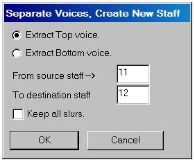
Or you may type SEPX n1 n2 n3, where n1 is either 1 (extract top voice), or 2 (bottom voice), n2 is the source staff number, and n3 is the destination staff number.
The following examples show how a combined part (Clarinets 1 and 2) may be split up in an orchestral score.
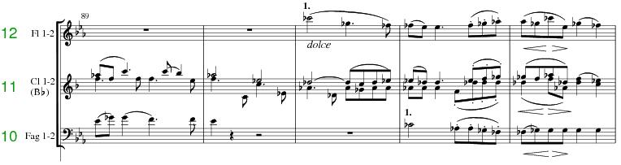
First space must be opened up so a new staff may be inserted. For this use the MOVE command.
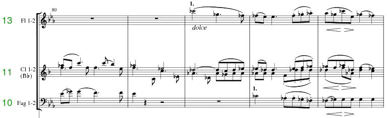
Then type SEPX 1 11 12. Some touch-up editing may be necessary and it may be necessary to LJ (line up and justify) the system.
The final result is as follows.
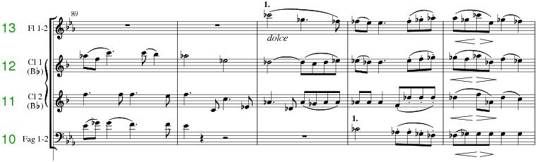
If you type TRAN alone, you will be asked to indicate what area of the music you wish to transpose.
Then the following dialog box will appear.
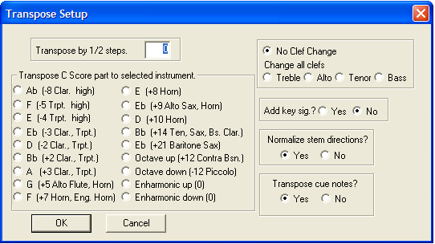
Any number of half steps of transposition (limited to + or - 35) may be typed into the top edit box, or you may click on any of the normal instrument transpositions. If the voice has a key signature, it will change to the proper key signature. If there is no key signature, you may choose to add one or not.
You may type TRAN followed by a series of numbers:
TRAN n1 n2 n3 n4 n5 n6 n7 n8
n1 = 1/2 steps to transpose
n2 = bottom staff number, n3 = left position, n4 = right position, n5 = top staff
n6 = 1 = add key signature if original in C
n7 = if non-zero change clef. (-1=treble, 1=bsdd, 2=alto, 3=tenor)
n8 = 0 = normalize stem directions, 1 = no
Use this format in macro files.
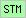
Normally stem lengths extend to one octave. However lower notes with stems down and higher notes with stems up look a little better with shortened stems. The STM command will adjust stems by changing P8 in designated areas as demonstrated below. Any other adjustments must be made by the regular editing methods.
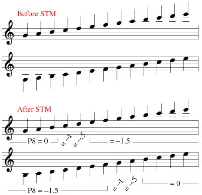
A group of notes, beams and rests may be altered to cue size with the CUE command. After typing CUE, you will be asked to Enter Staff#, Left pos., Right pos., [Upper Staff#] -- or Draw Box. In this manner you can choose any area of the page to convert to cue notes. The following example is from an extracted 2nd Flute part.
In the second example below, all the 1st Flute notes are changed from normal size to cue notes.
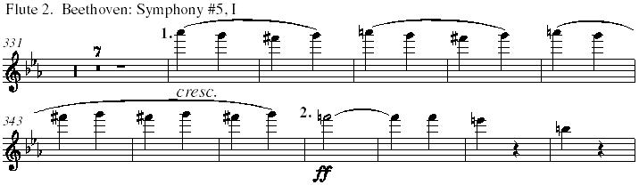
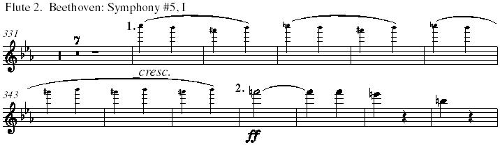
PGR move complete page from left (verso) to right (recto)
This command is useful if you have a wide-screen monitor.
In the following example page 2 is brought up in the normal manner.
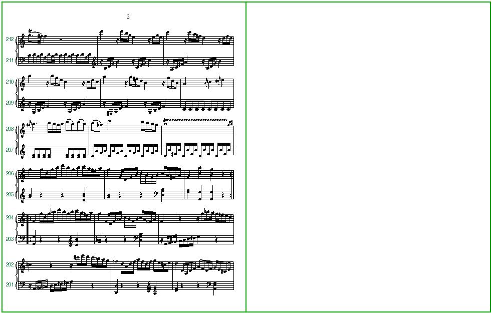
Type PGR to move the page to the recto position.
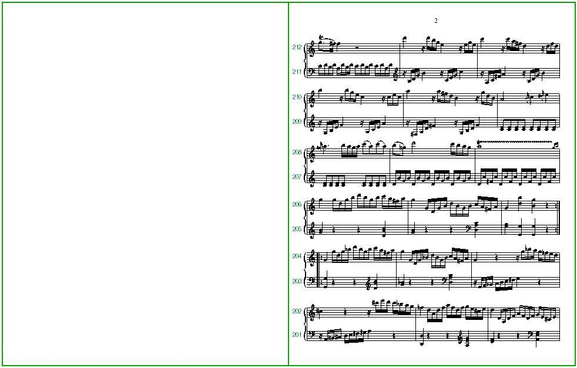
Then type GML (Get More Left), plus the pertinent file name, to fill in the verso page.
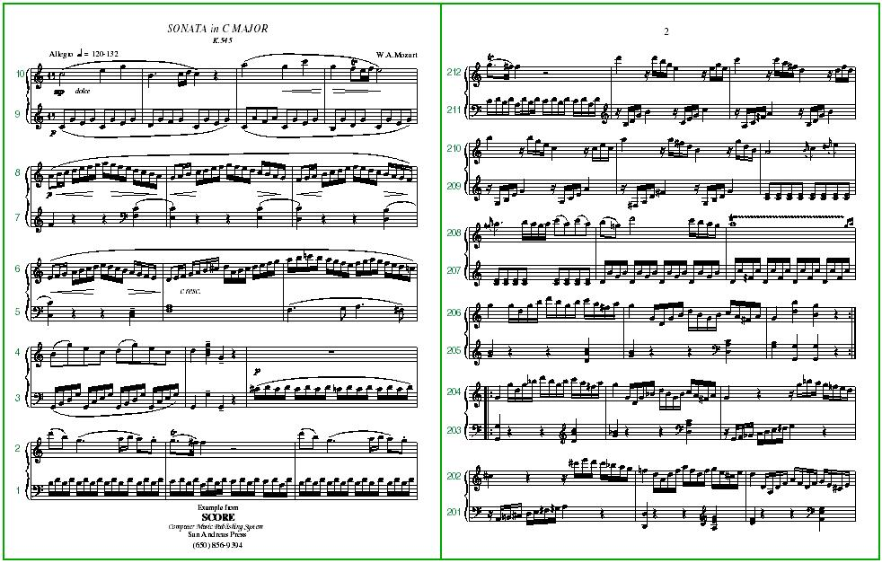
This can be very useful for producing "fold and staple" editions if you have a large format (11"x17") printer.
Other related commands are :
GML file -- get more and put file on left (verso) page
GMR file -- get more and put file on right (recto) page
GMB get more, get next file BACK in sequence, put on verso position
GMN get more, get next file in sequence, put on recto position
DEPL delete left page (verso), complete page
DEPR delete right page ( recto), complete page